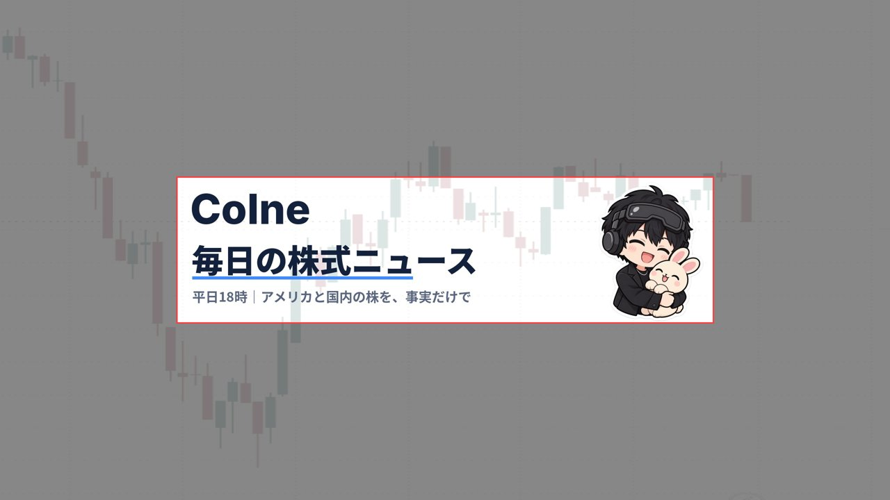
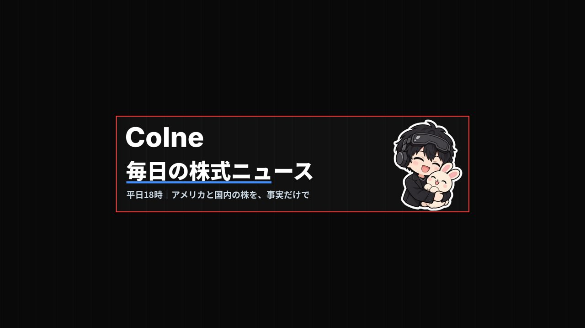
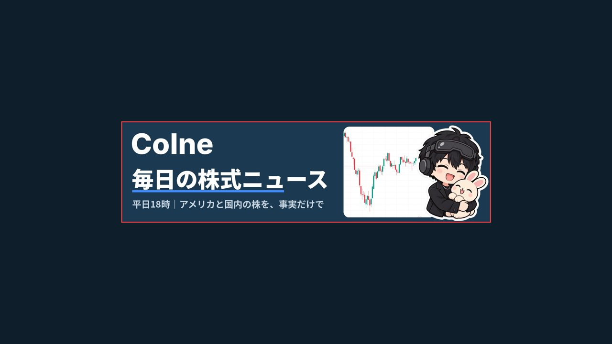

11/16の打ち合わせのご依頼（投資のチャンネルだと一目で分かるように）に合わせた案です。
| 案 | 名前 | ねらい |
|---|---|---|
| N1（おすすめ） | Colne｜毎日の株式ニュース | 名前のあとに何のチャンネルかを書く。検索の「株式ニュース」に当たる |
| N2 | Colneの株式ニュース | 短く、Colneさんの名前を前に出す |
| N3 | Colne｜平日18時の株式ニュース | 公開の時刻を名前で伝え、毎日見に来る習慣をつくる |
ハンドル（@〜）は変えません。名前を変えられる回数には上限があります（回数は資料によって違うため、変える前にYouTube Studioの画面で確かめます）。
平日の18時に、その日の株式ニュースをお届けします。 アメリカの株、国内の株、これからの予定を、事実だけでまとめています。 約8分の横動画と、1分のショートがあります。 ▼毎日の相場分析と、週1回の来週の展望は note で https://note.com/colne ▼いま Colne が気にしている相場は X で https://x.com/colne_x ▼Colne について https://www.colne.jp/ ※動画は事実をお伝えするもので、特定の銘柄の売り買いをすすめるものではありません。
赤い枠の中が、パソコン・スマホ・テレビのどれでも見える範囲です（灰色の所は端末によって切れます）。


